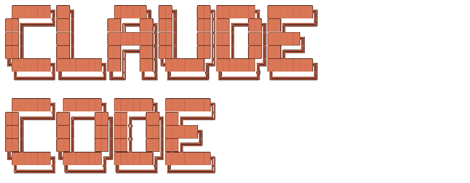
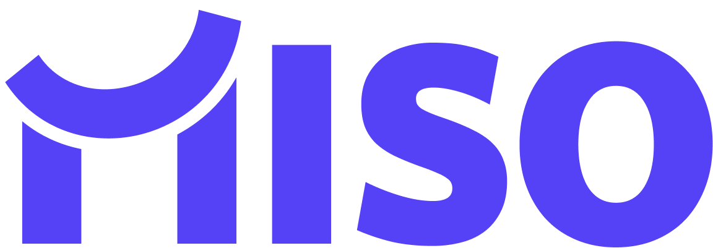

AI Tool Workshop · 2nd Session · 2026
제2회 위드인천에너지
AI 도구 활용 공유회
AI 도구 활용 공유회
디자인씽킹으로 실무 문제를 정의하고, Claude · MISO로 해결하는 방법을 함께 배워봅니다.
Design Thinking
Claude
MISO
위드인천에너지
목차
디자인씽킹에서 시작해 실무 적용까지
1회 복습
v0로 앱 만들기 · MISO로 AI 연결 · GitHub/Supabase/Vercel 배포
1회: "어떤 도구가 있나" → 2회: "실무 문제를 어떻게 해결하나"
1회: "어떤 도구가 있나" → 2회: "실무 문제를 어떻게 해결하나"
이론
01
디자인씽킹 Design Thinking
좋은 질문이 좋은 답을 만든다
02
Claude 웹 · Desktop
입문은 웹부터 — 한 단계 더 가면 Desktop·Cowork
03
MISO 사내 AI 플랫폼
사내 데이터·전사 시스템 연계 — 업데이트 내용 정리
실전
05
보안 리마인드 Security
도구별 보안 수칙 다시 한번
06
종합 실습 Hands-On
같은 불편, 두 가지 풀이 — Claude · MISO
RECAP
1회 복습
지난 시간 돌아보기
1회에서는 AI 도구의 종류와 기본적인 사용법을 배웠습니다.
v0로 앱을 만들고, Supabase에 데이터를 저장하고,
MISO로 AI를 연결하는 전체 흐름을 경험했습니다.
오늘은 여기서 한 걸음 더 나아갑니다.
1회에서 배운 것
v0로 앱 만들기
PRD를 작성해서 v0에 넣으면 웹 앱이 자동으로 생성 · 배포까지 한번에
Supabase로 데이터 저장
게임 점수, 사용자 정보 등 데이터를 클라우드 DB에 저장
MISO로 AI 연결
기본 제공된 MISO 흐름에 API Key로 앱 연결
보안 수칙
사내 데이터는 MISO에서만 · 프롬프트에 기밀 데이터 금지
1회 → 2회 변화
1회
"어떤 도구가 있나"
도구 소개, 기본 사용법, 실습
→
2회
"실무 문제를
어떻게 해결하나"
어떻게 해결하나"
디자인씽킹, Claude, 실무 적용
도구를 아는 것에서 → 실무 문제를 정의하고 해결하는 것으로
01
디자인씽킹 Design Thinking
좋은 답보다, 좋은 질문이 먼저다
AI 도구가 빠르게 발전하면서, 이제는 "어떻게 만드느냐"보다
"무엇을 만들어야 하느냐"가 더 중요해졌습니다.
AI에게 "출퇴근 앱 만들어줘"라고 말하면 금방 만들어줍니다.
하지만 정작 필요한 게 출퇴근 앱이 아니었다면, 만들었어도 쓰이지 않습니다.
디자인씽킹은 이 "무엇을"에 해당하는 질문을 찾는 방법론으로,
사람에 대한 깊은 이해에서 출발하여 진정으로 원하는 것을 정의하고
빠른 검증으로 솔루션을 찾아가는 방식입니다. AI 시대에 오히려 더 중요해지고 있습니다.
디자인씽킹은 5단계를 반복하며 문제를 해결합니다.
1~3단계(공감·정의·아이디어)는 사람이 주도해야 하는 영역으로, AI는 인터뷰 정리나 아이디어 확장을 보조합니다.
4~5단계(프로토타입·테스트)는 Claude Code로 빠르게 만들고 MISO로 실제 사용자에게 검증하는 단계입니다.
AI 시대에는 이 사이클을 하루에도 여러 번 돌릴 수 있습니다.
1
공감
Empathize
Empathize
현장 관찰·인터뷰로
실제 불편함을 발견
실제 불편함을 발견
현장 관찰·인터뷰
→
2
정의
Define
Define
페르소나·여정지도로
POV 문제 정의
POV 문제 정의
페르소나 · POV
페르소나 = 구체적 1인
POV = 문제 정의 공식
POV = 문제 정의 공식
→
3
아이디어
Ideate
Ideate
HMW·브레인라이팅으로
발산 후 SCAMPER로 자극
발산 후 SCAMPER로 자극
HMW · 브레인라이팅 · SCAMPER
→
4
프로토타입
Prototype
Prototype
완성보다 검증이 목적
핵심 기능만 빠르게
핵심 기능만 빠르게
MVP 제작
Minimum Viable Product
최소 기능만 담은 시제품
최소 기능만 담은 시제품
→
5
테스트
Test
Test
실제 사용자에게
검증·배우고 반복
검증·배우고 반복
사용자 검증
1~3단계 — 사람 주도
공감·정의·아이디어는 사람이 직접 판단해야 합니다. AI는 인터뷰 정리, 자료 분석, 아이디어 확장을 보조합니다.
How Might We? (HMW)
"우리는 어떻게 하면 ~할 수 있을까?" — 정의 단계에서 발견한 문제를 아이디어 발산의 질문으로 바꾸는 핵심 기법입니다.
4~5단계 — AI 가속
Claude Code로 하루에도 여러 번 프로토타입을 만들고, 실제 사용자 피드백으로 빠르게 개선합니다.
SCAMPER
— 아이디어 단계에서 기존 발상을 자극하는 7가지 관점 (예시: 회의 효율 개선)
S
대체
종이 보고서
→ 디지털
→ 디지털
C
결합
점검 + 안전교육
합치기
합치기
A
적용
호텔 컨시어지
→ 사내 헬프데스크
→ 사내 헬프데스크
M
변형
1시간 회의
→ 15분 스탠드업
→ 15분 스탠드업
P
다른 용도
회의실 모니터
→ 사내 공지
→ 사내 공지
E
제거
출근부 작성
→ 자동 인식
→ 자동 인식
R
역발상
결론 먼저
→ 토론은 나중
→ 토론은 나중
01
디자인씽킹 실전 예시
"회의실 예약했는데 들어가니까 다른 팀이 있어요!"
공감이나 정의가 제대로 이루어지지 않으면, 아무리 좋은 솔루션을 만들어도 문제는 해결되지 않고 비용만 커집니다.
① 공감
② 정의
③ 아이디어
④ 솔루션
⑤ 결과
솔루션
직행
직행
→
현장 관찰 없음
사용자 인터뷰 없음
데이터 수집 없음
사용자 인터뷰 없음
데이터 수집 없음
→
문제 파악 없음
원인 분석 없음
페르소나 없음
원인 분석 없음
페르소나 없음
→
발산 없음
선택 기준 없음
검증 없음
선택 기준 없음
검증 없음
→
• "시스템이 오래돼서 그래"
• 예약 시스템 통째로 교체
• 새 그룹웨어 도입 검토
• IT팀 긴급 투입
• 예약 시스템 통째로 교체
• 새 그룹웨어 도입 검토
• IT팀 긴급 투입
수천만 원
→
• 충돌 여전히 발생
• 효과 불명확
• 근거 없는 투자
• 효과 불명확
• 근거 없는 투자
↩ 처음부터 다시
공감·정의 단계 생략했기 때문
비효율적
정의 ①
정의 ①
→
• 민원 접수 내용만 검토
• 현장 관찰 없음
• 사용자 인터뷰 없음
• 현장 관찰 없음
• 사용자 인터뷰 없음
→
"예약 안 하고 사용"
• 무단 사용이 문제라고 정의
• 실제 현장을 안 봄
• 민원 내용만으로 추측
• 실제 현장을 안 봄
• 민원 내용만으로 추측
→
• 예약 필수화 공지
• 무단 사용 제재 규정
• 출입 통제 시스템 도입
• 무단 사용 제재 규정
• 출입 통제 시스템 도입
→
• 카드키 출입 시스템 설치
• 예약 없이 입실 차단
• 수천만 원
• 예약 없이 입실 차단
• 수천만 원
→
• 예약은 다 하고 있었음
• 진짜 원인은 퇴실 지연
• 엉뚱한 곳에 돈 씀
• 진짜 원인은 퇴실 지연
• 엉뚱한 곳에 돈 씀
↩ ① 공감 단계로 복귀
현장을 봤으면 무단 사용이 아님을 알았을 것
비효율적
정의 ②
정의 ②
→
• 타 회사 대비 회의실 수 비교
• 이용 건수 집계 → "많긴 하네"
• 관리자 "회의실이 부족해요"
• 이용 건수 집계 → "많긴 하네"
• 관리자 "회의실이 부족해요"
→
"회의실 수 부족"
• 인프라 부족으로 정의
• 실사용자 제외
• 수요 증가로 가정
• 실사용자 제외
• 수요 증가로 가정
→
• 증설 공간 검토
• 층별 배치 계획
• 인테리어 업체 선정
• 층별 배치 계획
• 인테리어 업체 선정
→
• 회의실 3개 증설
• 인테리어 공사
• 수억 원
• 인테리어 공사
• 수억 원
→
• 어느 정도 개선
• 점유 초과 문제는 여전
• 너무 큰 비용
• 점유 초과 문제는 여전
• 너무 큰 비용
↩ ① 공감 단계로 복귀
사용자 관찰 없이 정의한 결과
주의: "이런 솔루션이 있으니까 적용하자"부터 시작하면, 문제를 솔루션에 끼워 맞추게 됩니다. 솔루션은 문제를 정확히 정의한 다음에 생각해야 합니다.
01
디자인씽킹 실전 예시 — 올바른 접근
공감에서 출발하면, 결과가 완전히 달라진다
현장 관찰과 인터뷰를 거치면 "진짜 문제"가 보입니다. 그러면 솔루션과 비용이 완전히 달라집니다.
① 공감
② 정의
③ 아이디어
④ 솔루션
⑤ 결과
올바른
정의
정의
→
• 회의실 앞 직접 관찰
• 예약자·비예약자 인터뷰
• 예약 로그 패턴 분석
• 예약자·비예약자 인터뷰
• 예약 로그 패턴 분석
👤 페르소나
김대리 · 입사 2년차
매주 3회 이상 회의실 예약
매주 3회 이상 회의실 예약
🗺️ 여정 (Pain)
예약 → 입실 시도 → 점유 발견 → 대기·재조정
→
"예약 종료 후 퇴실 알림 부재"
• 이전 팀 시간 초과 점유
• 시스템이 아닌 운영 문제
• 시스템이 아닌 운영 문제
📐 POV 공식 적용
"다음 예약자는 정시 입실 보장이 필요하다, 왜냐하면 이전 팀 시간 초과로 회의가 지연되기 때문이다."
[페르소나] · [니즈] · [인사이트]
→
HMW: "예약 종료 시 자동 퇴실 유도?"
① 브레인라이팅 (12개 발산)
② SCAMPER 자극
M 1분→5분 전 알림 (변형)
C 알림+다음팀 이름 (결합)
③ 멀티보팅 → Top 3
② SCAMPER 자극
M 1분→5분 전 알림 (변형)
C 알림+다음팀 이름 (결합)
③ 멀티보팅 → Top 3
✓ 종료 5분 전 퇴실 알림
✓ 초과 시 다음팀에 알림
✓ 입실 현황 모니터
✓ 초과 시 다음팀에 알림
✓ 입실 현황 모니터
→
• 종료 5분 전 퇴실 알림 발송
• 초과 시 다음 예약자에게 알림
• 반복 초과 팀 현황 기록
• 초과 시 다음 예약자에게 알림
• 반복 초과 팀 현황 기록
⚡ Quick MVP
기존 그룹웨어에 알림만 추가
1주 내 적용 가능
1주 내 적용 가능
개발 비용만 · 인프라 변경 X
→
• 충돌 건수 85% 감소
• 회의실 수는 그대로
• 공사 없이 해결
• 회의실 수는 그대로
• 공사 없이 해결
💰 비용 비교
증설 수억 원 →
개발 ~수백만 원
개발 ~수백만 원
✓ 올바른 정의가 올바른 해결을 만든다
디자인씽킹에서 기억할 것
👤
실사용자에게 묻기
관리자·보고서가 아니라
실제 겪는 사람에게 직접
실제 겪는 사람에게 직접
👁️
현장 관찰
보고서가 아니라
직접 가서 보기
직접 가서 보기
🔄
문제 재정의
처음 보이는 문제가
진짜가 아닐 수 있다
진짜가 아닐 수 있다
❓
HMW 질문
"어떻게 하면
~할 수 있을까?"
~할 수 있을까?"
순서대로 안 해도 됩니다
공감→정의→아이디어→프로토타입→테스트는
고정된 순서가 아닙니다.
언제든 돌아가고, 건너뛰고, 동시에 가능합니다.
앞 슬라이드처럼 잘못 정의했으면
공감으로 돌아가면 됩니다.
고정된 순서가 아닙니다.
언제든 돌아가고, 건너뛰고, 동시에 가능합니다.
앞 슬라이드처럼 잘못 정의했으면
공감으로 돌아가면 됩니다.
02
도구 이해 — "무엇을" 정했다면, 이제 "어떻게"
문제를 정의했다면, 이제 도구가 필요하다
CLAUDE (Anthropic)
디자인씽킹으로 "진짜 문제"를 정의했다면, 다음은 실제로 만드는 단계입니다.
Claude는 웹·모바일·Desktop·API·CLI·VS Code 등 다양한 환경에서 쓸 수 있고, 환경마다 특화된 기능이 조금씩 다릅니다.
예를 들어 웹에는 디자인 전용 페이지(claude.ai/design)가, Desktop에는 Cowork 자동화가 있는 식입니다.
처음 시작하는 분께는 웹을 권장합니다 — 설치 없이 브라우저만 열면 되고, 왼쪽 메뉴에 쓸 수 있는 기능이 전부 보여 처음 쓰는 분도 금방 익숙해집니다.
Claude는 웹·모바일·Desktop·API·CLI·VS Code 등 다양한 환경에서 쓸 수 있고, 환경마다 특화된 기능이 조금씩 다릅니다.
예를 들어 웹에는 디자인 전용 페이지(claude.ai/design)가, Desktop에는 Cowork 자동화가 있는 식입니다.
처음 시작하는 분께는 웹을 권장합니다 — 설치 없이 브라우저만 열면 되고, 왼쪽 메뉴에 쓸 수 있는 기능이 전부 보여 처음 쓰는 분도 금방 익숙해집니다.
웹에서 시킬 수 있는 일
크게 세 가지
💬 채팅 작업
글쓰기·문서 분석·자료 검색·아이디어 정리는 기본, 코드 작성·앱 제작·데이터 분석·차트 생성까지 한 대화창에서. 파일·이미지를 던지면 요약·번역·OCR도 즉시.
🎨 디자인 · 제작 NEW
최근(4/17) 출시된 디자인 전용 페이지 claude.ai/design — 슬라이드·포스터·인포그래픽 같은 시각 자료를 대화만으로 제작·수정하고 Canva·PDF·PPTX로 내보내기까지 지원합니다.
🔗 외부 도구 연동
Slack·Gmail·Drive·GitHub는 커넥터로 연결, Excel·Word·PowerPoint는 전용 애드인을 설치해 Office 안에서 직접 Claude 호출. 특히 Excel 애드인은 수식·의존성을 그대로 유지한 채 데이터를 다뤄 현업에서 바로 쓸 수 있습니다.
02
Claude Desktop — 세 가지 탭
Desktop을 열면 이 세 가지가 있습니다
Claude Desktop은 대화로 문서·앱을 만들고, 로컬 파일을 직접 다루고, 스케줄까지 걸 수 있습니다.
Artifact로 앱을 만들어 바로 배포하거나, 내 PC 파일을 분석해서 보고서를 생성하거나, 매주 자동으로 반복 작업을 시킬 수도 있습니다.
이 기능들이 Chat · Cowork · Code 세 탭에 나뉘어 있습니다.
03
도구 이해 — 사내 데이터는 사내에서
MISO — 우리 회사 전용 AI 플랫폼
MISO (사내 AI 플랫폼)
Claude·v0 같은 외부 AI 도구는 강력하지만, 사내 기밀 데이터를 그대로 올리기엔 부담이 있습니다.
MISO는 사내 서버에서 동작하는 AI 플랫폼으로, 데이터가 외부로 나가지 않는 환경에서 챗봇·자동화·분석을 만들 수 있습니다.
외부 AI(Claude)는 일반 업무에, MISO는 사내 데이터·전사 시스템 연계에 — 두 도구를 상황에 맞게 함께 쓰는 것이 핵심입니다.
MISO는 사내 서버에서 동작하는 AI 플랫폼으로, 데이터가 외부로 나가지 않는 환경에서 챗봇·자동화·분석을 만들 수 있습니다.
외부 AI(Claude)는 일반 업무에, MISO는 사내 데이터·전사 시스템 연계에 — 두 도구를 상황에 맞게 함께 쓰는 것이 핵심입니다.
04
MISO 사용 방법 — 핵심 기능 3가지 단계별 가이드
MISO — 어떻게 쓰는가
MISO의 핵심 기능 세 가지(지식 저장소 · 플레이메이커 · 웹사이트 제작)가 무엇이고, 각각을 어떻게 만드는지 단계별로 살펴봅니다.
04
MISO 웹사이트 제작 추후 기능 구현 예정
MISO 웹사이트 — 사내앱 제작의 최적 도구
v0 수준의 대화형 웹페이지 제작 UI에 더해, 사용자가 직접 채워두는 2가지 컨텍스트 영역(코딩 규칙·요구사항/디자인 문서)이 있어 한 번 설정해두면 AI가 매 대화마다 자동으로 참조 — 매번 같은 설명을 반복할 필요가 없습니다. 사내 데이터베이스가 기본 내장(PocketBase — 가벼운 자체 호스팅 DB)되어 별도 가입 없이 데이터 저장·조회가 가능하고, MISO의 AI 채팅·워크플로우·문서 검색을 앱 안에서 그대로 호출할 수 있어 별도 API Key 없이 AI 기능을 붙입니다. 여기에 Slack 같은 외부 서비스 알림·비밀번호 안전 보관(환경변수)·자동 버전 저장(v1, v2…)·에러 자동 수집·실시간 미리보기까지 — 사내앱 제작에 필요한 모든 환경이 한 곳에 마련된 플랫폼입니다.
05
보안 리마인드 Security
AI 사용 시 이것만 기억하세요
외부 AI 도구 사용 시 피해야 할 것과, 내가 만든 앱에 대해 직접 할 수 있는 자가 보안 검토를 함께 안내합니다.
🚫
하지 말 것
외부 AI 도구 사용 시 금지 사항
사내 기밀 데이터를 프롬프트에 붙여넣지 않기
Claude·v0 등 외부 서비스에는 기능 설명만
비밀번호·API Key를 코드에 직접 적지 않기
환경변수(.env)로 분리 — Claude Code에게 "환경변수로 관리해줘"
AI가 만든 코드를 무조건 신뢰하지 않기
실행 전 동작 확인 — 특히 파일 삭제·외부 전송
✓ 사내 기밀이 필요하면 MISO에서
사내 서버에서 처리 → 외부 유출 없음
🔍
직접 할 수 있는 것
내가 만든 앱의 자가 보안 검토
한 줄로 시작
"이 코드의 보안 취약점을 검토해줘"
같은 AI에게 다시 점검 지시 → 가장 빠르고 저렴한 안전장치
📋 점검 지시 예시
✓ API Key·비밀번호 하드코딩 여부
✓ 개인정보(주민번호·이메일·전화) 노출 위치
✓ .env이 .gitignore에 포함됐는지
✓ SQL Injection·XSS 취약점
💬 SQL Injection · 입력창에 SQL 명령어를 넣어 DB를 조작·탈취
💬 XSS(Cross-Site Scripting) · 게시글·URL에 자바스크립트를 심어 사용자 정보 탈취
💬 XSS(Cross-Site Scripting) · 게시글·URL에 자바스크립트를 심어 사용자 정보 탈취
🏢
INTECO 자체 보안 점검 시스템 구축 중
사내 표준 AI 기반 사전 점검 도구가 준비 중입니다. 배포 전 1차 자가 점검을 거치면 외부 검토 단계에서 지적이 줄어, 보안 검토 사이클이 단축됩니다.
06
종합 실습 — 모아보기
같은 불편, 두 가지 풀이
실습 STEP 1
Claude 웹 · Desktop
한 명의 사용자가 자기 PC에서 Claude Desktop만으로 자신의 불편을 스스로 줄여보는 방식입니다. 매일 기상청에 접속해 날씨를 확인해야 하는 번거로움 같은 것이죠.
인천 날씨 예제로 세 탭(대화로 만들기 · 자동화로 반복 · 코드로 확장)의 기능별 차이를 익히고, 같은 패턴을 본인 업무에 응용해봅니다.
실습 STEP 2
MISO 플레이메이커
같은 불편을 사내 MISO 플레이메이커로도 풀어봅니다. STEP 1의 Cowork는 자동화·스케줄을 위해 내 PC를 켜둬야 하는 반면, MISO는 사내 서버에서 동작하므로 내 PC가 꺼져 있어도 워크플로우가 돌아갑니다. AI와 대화만으로 동일한 자동화를 사내 인프라에서 운영할 수 있습니다.
의도와 다르게 설계되는 부분이 보이면 생성 도중에 바로 "추가 요구사항"으로 보정하세요. 다 만들어진 뒤엔 처음부터 다시 시작하거나 노드를 직접 수정해야 합니다.
① 문제 정의 입력
목적 · 인천 기온·습도를 수집하고 위험 시 알림
대상 · 날씨 모니터링 사용자
핵심 문제 · 매번 날씨 앱·웹을 수동 방문해 조회
페인포인트 · 수동 확인 번거로움 · 감지 지연 · 기준 초과 놓침
대상 · 날씨 모니터링 사용자
핵심 문제 · 매번 날씨 앱·웹을 수동 방문해 조회
페인포인트 · 수동 확인 번거로움 · 감지 지연 · 기준 초과 놓침
①-B 추가 요구사항 (Code 노드 미적용 시)
API 조회와 위험 판정은 반드시 Python Code 노드로 구현해줘. LLM 노드는 쓰지 마. 워크플로우 제작 부분을 테스트하는 목적이야.
②-A 기능 설계 · 최소 필수 선택
▸ 입력 정보
· 기온 위험 기준(°C) ✓
· 습도 위험 기준(%) ✓
▸ 핵심 기능
· 인천 날씨 자동 수집 ✓
· 위험 기준 자동 판정 ✓
▸ 앱 유형 · 일회성 워크플로우
▸ 결과 · 날씨(기온·습도) + 위험 여부 텍스트 출력
· 기온 위험 기준(°C) ✓
· 습도 위험 기준(%) ✓
▸ 핵심 기능
· 인천 날씨 자동 수집 ✓
· 위험 기준 자동 판정 ✓
▸ 앱 유형 · 일회성 워크플로우
▸ 결과 · 날씨(기온·습도) + 위험 여부 텍스트 출력
②-B 기능 설계 추가 요구사항
날씨 API 조회와 위험 판정은 반드시 Python Code 노드로 구현해줘. LLM 노드는 쓰지 마. 테스트 목적이니 결과는 날씨(기온·습도)와 위험 여부를 텍스트로 출력. 날씨 조회는 아래의 API 코드를 사용해서 조회해줘.
📡 Open-Meteo API
GET https://api.open-meteo.com/v1/forecast
?latitude=37.4563&longitude=126.7052
¤t=temperature_2m,relative_humidity_2m
&timezone=Asia/Seoul
?latitude=37.4563&longitude=126.7052
¤t=temperature_2m,relative_humidity_2m
&timezone=Asia/Seoul
응답: current.temperature_2m · current.relative_humidity_2m
WRAP-UP
마무리

THANK YOU
수고하셨습니다
제2회 AI 도구 활용 공유회
